首頁
歡迎來到我的插畫作品集網站!!!這裡展示各類原創角色/二創角色、風景作品等。
關於我
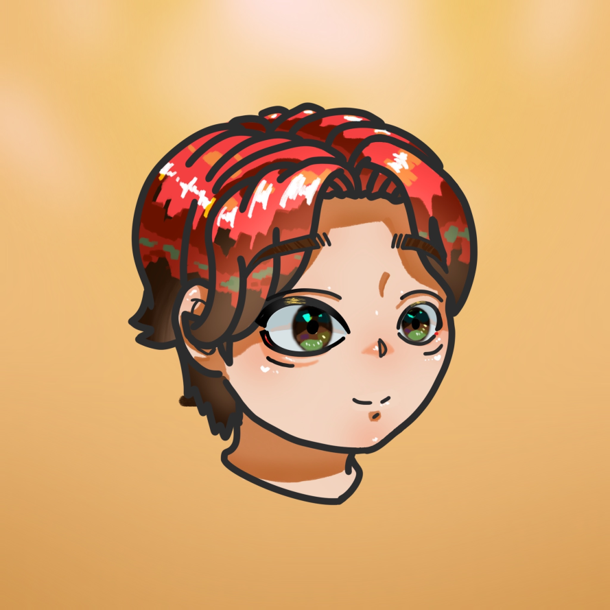
我是插畫熱愛者，喜歡打造溫柔細膩的畫面，並以角色、故事感與情緒呈現為主要創作方向。目前仍在進修，以展現自我為用意而創建此網站(暫無意願接取委託)
我對於色彩的掌握和光影的細節有獨特的追求，作品風格多變，期待能在這個平台上和更多同好交流。
作品展示
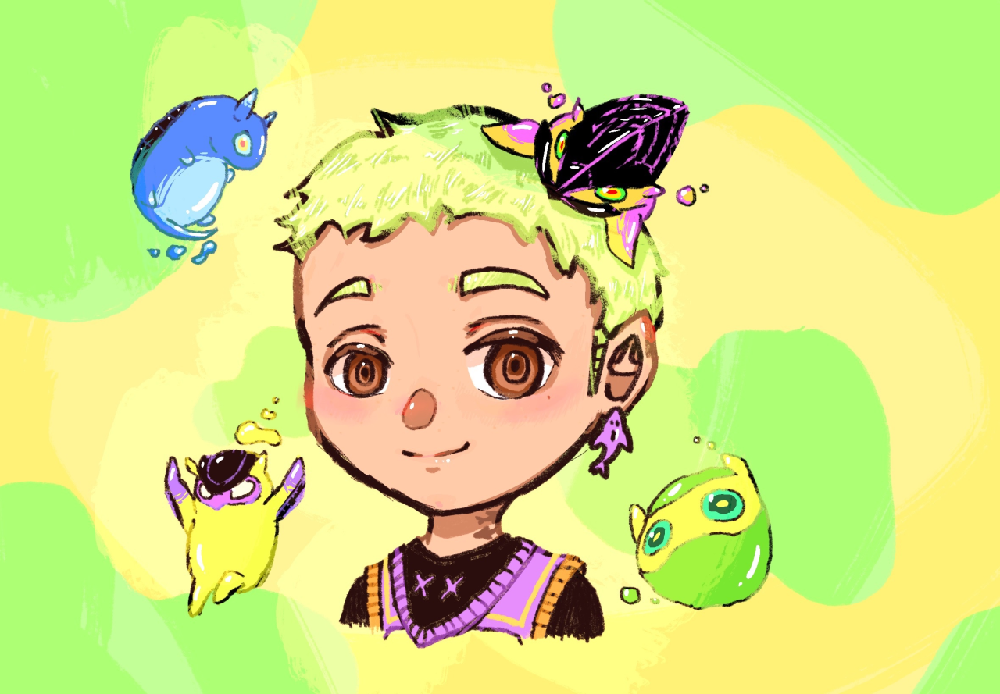
角色插畫
角色感、故事感強烈的作品。
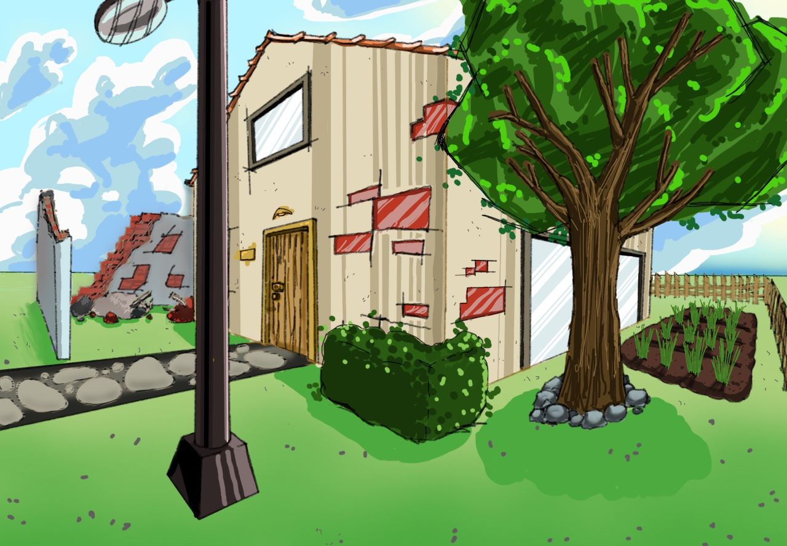
場景插畫
氣氛、光影、色彩為主軸。
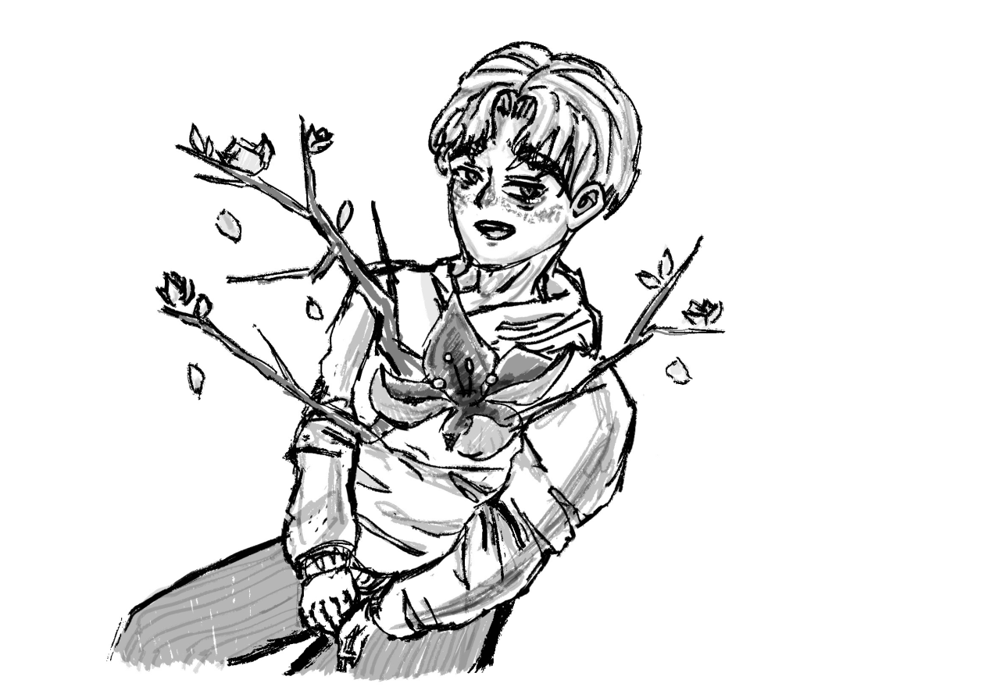
無彩插畫
突發靈感、純線搞繪製。
單一作品：【數碼馬戲團】 Caine 擬人化創作流程
以下是將 Caine 擬人化的創作過程，我們從靈感來源出發，透過分步解析，從概念發想到最終光影細節，呈現角色的誕生。
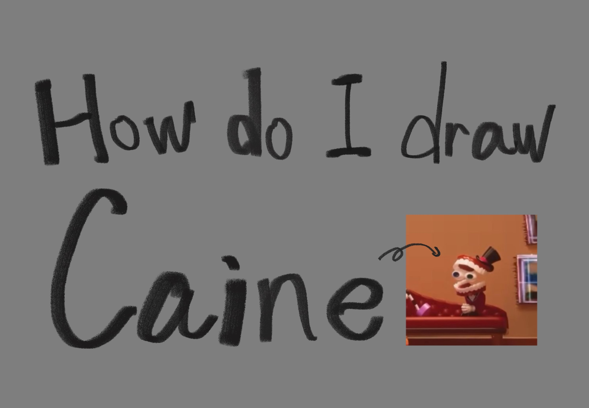
步驟 1: 創作靈感與設計概念
本作品的靈感來自於《數碼馬戲團》中的 Caine，旨在保留其標誌性的牙齒形象與馬戲團主持人特徵，並將其轉化為一位風格華麗、具有表演家氣質的擬人角色。
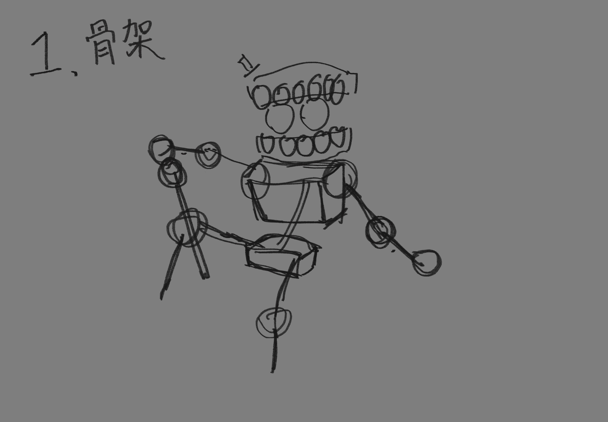
步驟 2: 骨架與動態
首先，使用基礎幾何圖形建立角色的骨架，確定 Caine 擬人化後的肢體動作——優雅地持杖抬腿，這是展現其馬戲團主持人魅力的關鍵。
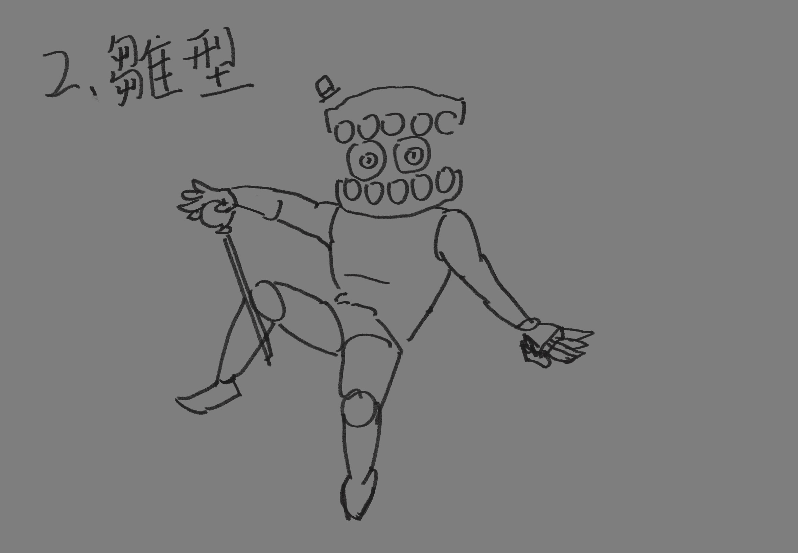
步驟 3: 雛型結構
在骨架上繪製基礎肌肉和衣物雛型，定義紅色的燕尾服外套和光澤感的褲子。確定頭部牙齒和眼睛的基本體積。
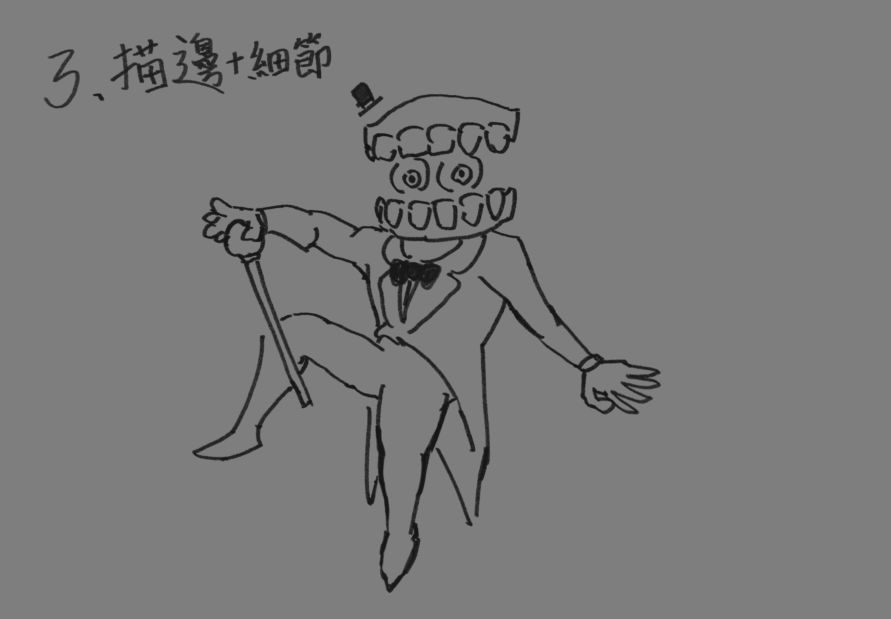
步驟 4: 精確描邊與細節刻畫
這是將線稿精細化的階段，確認燕尾服、領結、手杖的最終造型，並將 Caine 的牙齒和眼睛的細節完成描繪。
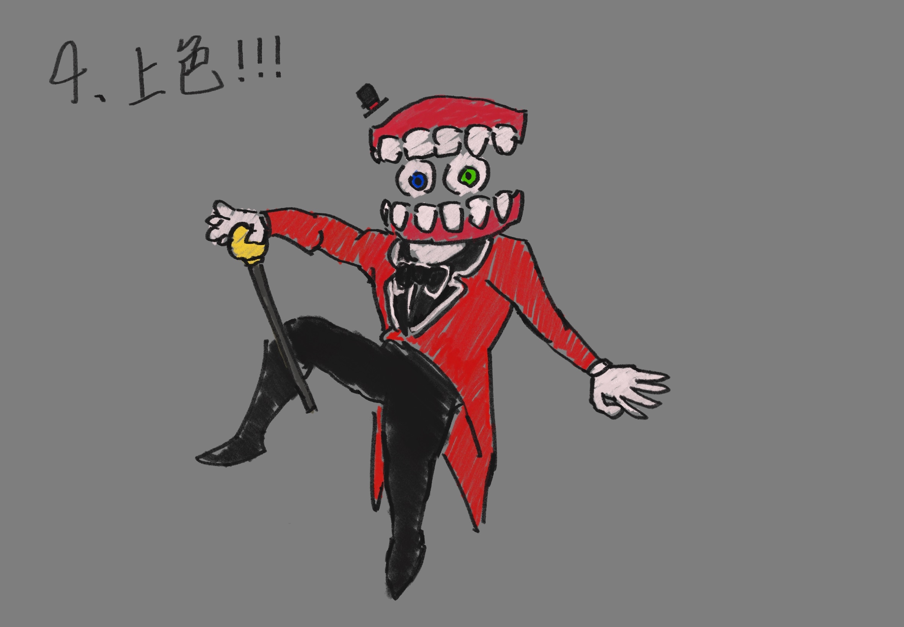
步驟 5: 基礎上色!!!
鋪上角色的主色調，包括亮眼的紅色西裝、黑色的褲子與鞋子，以及牙齒和異色瞳。這是為後續光影效果打下基礎。
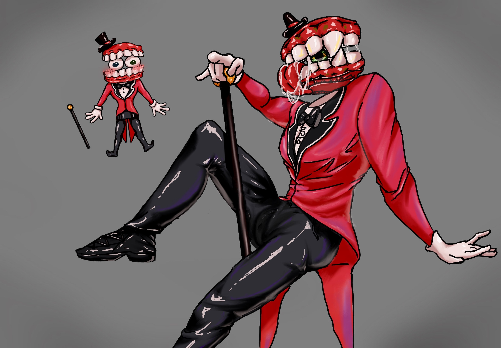
步驟 6: 明暗與質感處理 ↳成品
最後一步是精華所在：添加細膩的光影和高光。特別針對紅西裝和黑漆皮褲進行打光，營造出豐富的材質感和立體度，完成最終成品。
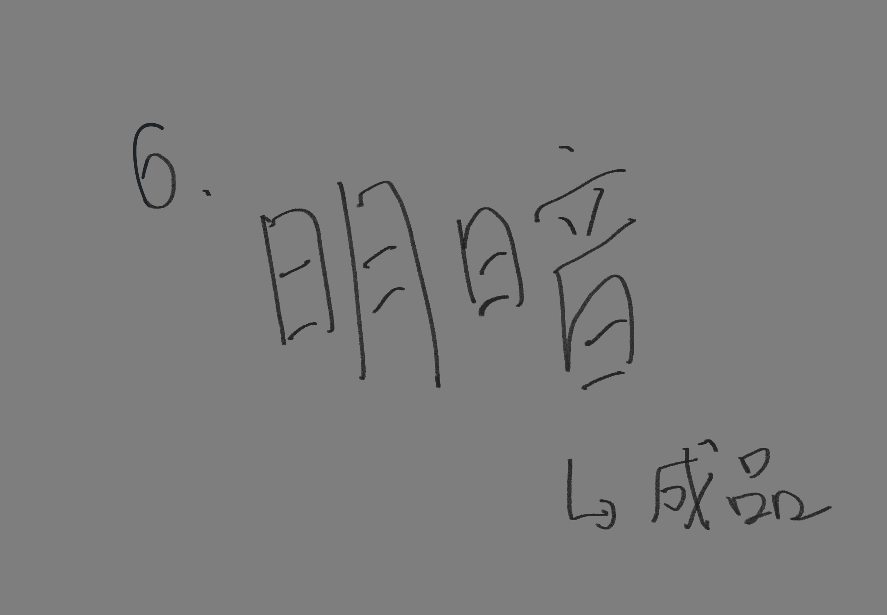
最新消息
展覽公告、作品更新、社群平台貼文資訊等(目前尚無)。
聯絡方式
Email：wsxijn1029@gmail.com
IG：@wu_lafi_1018